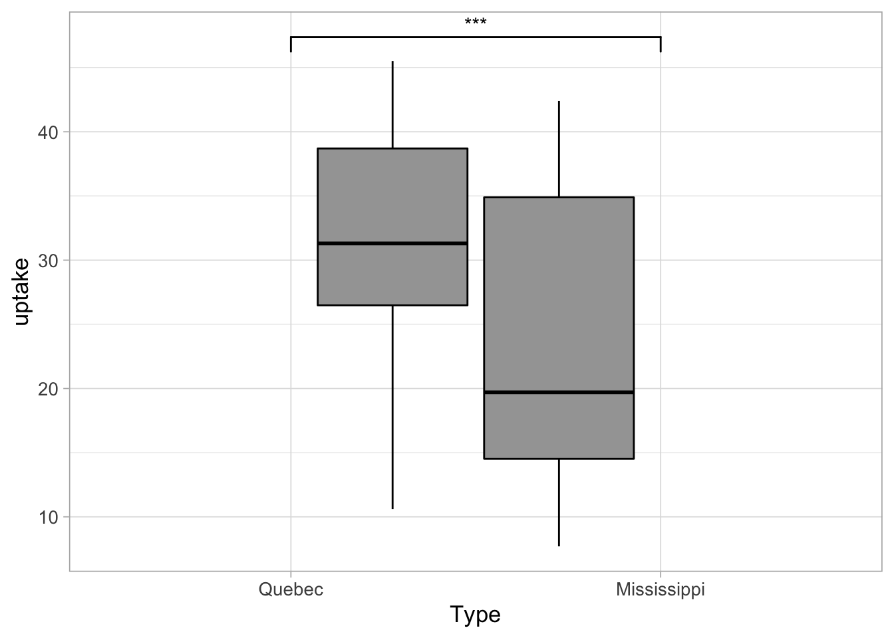
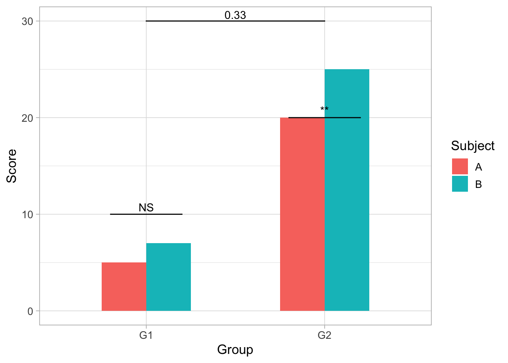
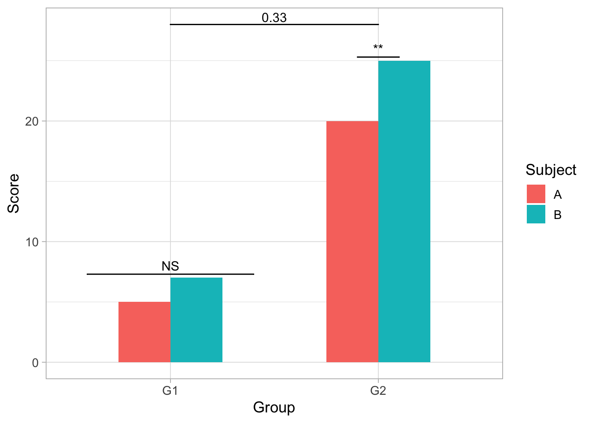
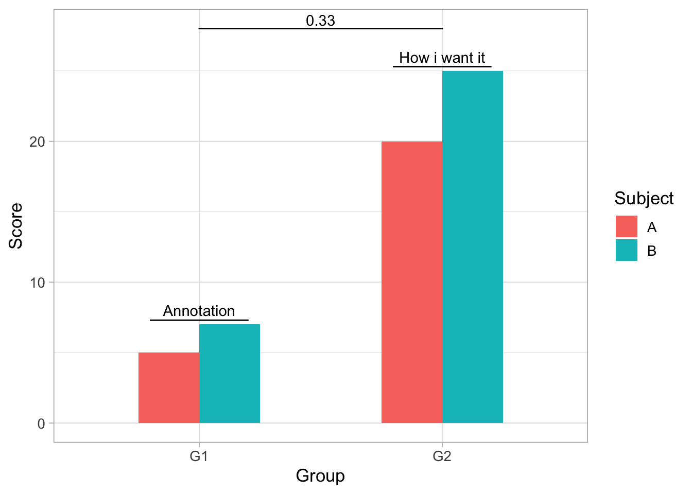
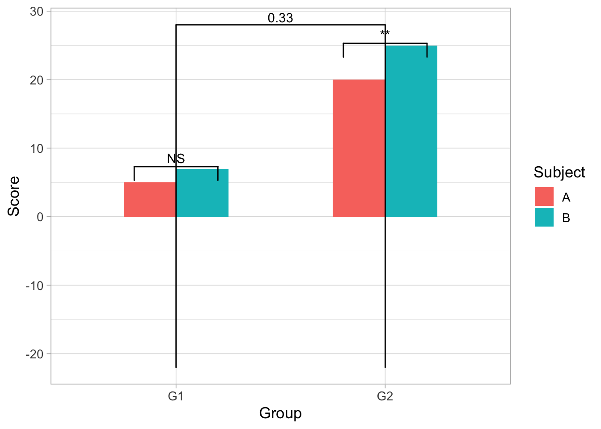
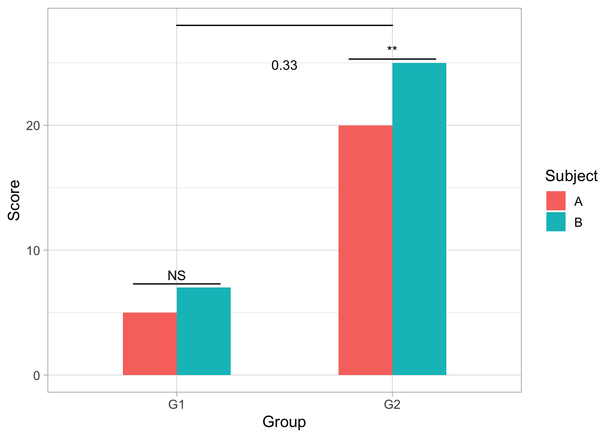

Chapter 5 How to Annotate a Graph Using GG Signif"
The ggsignif package is an extension of GGplot, the popular plotting package used for data visualization. GGplot is used by layering graphing, data and visualization components. GGsignif is used as an additional layer to the GGplot packaage that allows for calculation and annotation of statistical significance within graphs.
#How do you use GGsignif? 1st: load both packages
library(ggplot2)
library(ggsignif)2nd: Plot your data using GGplot2 and add layer ‘geom_signif’.
all.data<- CO2
library(dplyr)
All.data <- all.data %>%
select(Type,Treatment,conc,uptake)
ggplot(All.data, aes(x=Type,y=uptake,group=Treatment))+
geom_boxplot(fill='#A4A4A4', color = "black")+
theme_light(base_size=13)+
geom_signif(comparisons = list(c("Quebec","Mississippi")),map_signif_level = TRUE)
- The first input delineates which values need to be calculated for annotation i.e. comparison = list(c(here is where enter those values)). ‘Map_signif_level’ is used to control whether the output graph contains the actual signficance or stars (***).
#Advanced Options You can also control exactly where the annotations will show up in the output graph.
dataf<- data.frame(Group<- c("G1","G1","G2","G2"),
Subject<- c("A","B","A","B"),
Score<- c(5,7,20,25))
ggplot(dataf, aes(Group,Score))+
geom_bar(aes(fill = Subject), stat = "identity",
position = "dodge", width = .5)+
geom_signif(y_position = c(7.3,25.3), xmin = c(0.8,1.8),
xmax = c(1.2,2.2), annotation = c("NS","**"),
tip_length = 0)+
geom_signif(comparisons = list(c("G1","G2")), y_position = 28,
tip_length = 0, vjust = .1)+
theme_light(base_size=13)##‘y_position’ - Controls the placement of each individual groups’ signficance annotation : y_position = c(height of first annotation, second annotation height on y-axis).
ggplot(dataf, aes(Group,Score))+
geom_bar(aes(fill = Subject), stat = "identity",
position = "dodge", width = .5)+
geom_signif(y_position = c(10,20), xmin = c(0.8,1.8),
xmax = c(1.2,2.2), annotation = c("NS","**"),
tip_length = 0)+
geom_signif(comparisons = list(c("G1","G2")), y_position = 30,
tip_length = 0, vjust = .1)+
theme_light(base_size=13)
5.1 ‘xmin’ and ‘xmax’
- The two work together to set the length of the annotation bar where the first number within xmin’s paranthesis is the starting point and the first number in xmax is the end. In the first graph xmin = c(.8,1.8) and xmax = c(1.2,2.2), this means the first bar starts on the x-axis at .8 until 1.2 and the second bar’s length is from 1.8 to 2.2.
- It can also be made shorter or longer:
ggplot(dataf, aes(Group,Score))+
geom_bar(aes(fill = Subject), stat = "identity",
position = "dodge", width = .5)+
geom_signif(y_position = c(7.3,25.3), xmin = c(0.6,1.9),
xmax = c(1.4,2.1), annotation = c("NS","**"),
tip_length = 0)+
geom_signif(comparisons = list(c("G1","G2")), y_position = 28,
tip_length = 0, vjust = .1)+
theme_light(base_size=13)
5.2 ‘annotation’
- Here is where you type in the desired text or symbol for each bar.
ggplot(dataf, aes(Group,Score))+
geom_bar(aes(fill = Subject), stat = "identity",
position = "dodge", width = .5)+
geom_signif(y_position = c(7.3,25.3), xmin = c(0.8,1.8),
xmax = c(1.2,2.2), annotation = c("Annotation","How i want it"),
tip_length = 0)+
geom_signif(comparisons = list(c("G1","G2")), y_position = 28,
tip_length = 0, vjust = .1)+
theme_light(base_size=13)
5.3 ‘tip_length’
- This gives the option to add vertical lines coming down on both ends of annotation bar of varying length.
ggplot(dataf, aes(Group,Score))+
geom_bar(aes(fill = Subject), stat = "identity",
position = "dodge", width = .5)+
geom_signif(y_position = c(7.3,25.3), xmin = c(0.8,1.8),
xmax = c(1.2,2.2), annotation = c("NS","**"),
tip_length = .1)+
geom_signif(comparisons = list(c("G1","G2")), y_position = 28,
tip_length = 2.5, vjust = .1)+
theme_light(base_size=13)
5.4 ‘vjust’
- This option allows user to control placement of the “0.33” in the graph.
ggplot(dataf, aes(Group,Score))+
geom_bar(aes(fill = Subject), stat = "identity",
position = "dodge", width = .5)+
geom_signif(y_position = c(7.3,25.3), xmin = c(0.8,1.8),
xmax = c(1.2,2.2), annotation = c("NS","**"),
tip_length = 0)+
geom_signif(comparisons = list(c("G1","G2")), y_position = 28,
tip_length = 0, vjust = 5)+
theme_light(base_size=13)